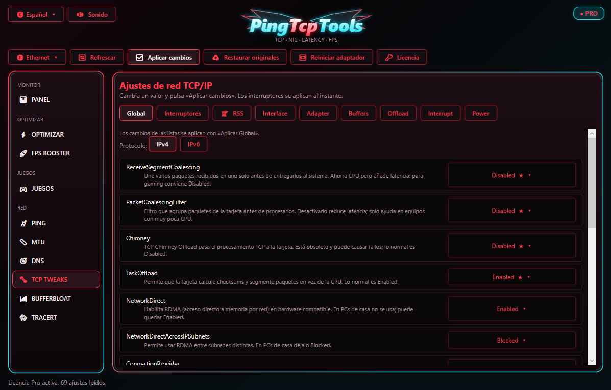

Cuál es el mejor DNS para jugar y navegar en 2026 (y cómo elegirlo)
This guide is currently available in Spanish only. Use your browser’s translate option to read it in English.

«Cambia tu DNS a 1.1.1.1 y baja tu ping» es uno de los consejos más repetidos en internet. Es verdad a medias. El DNS sí puede hacer que todo cargue más rápido, pero casi nunca cambia el ping dentro de una partida. Aquí te explicamos qué hace realmente, cuándo merece la pena cambiarlo y cómo elegir el mejor para tu conexión, que no siempre es el más famoso.
Qué es el DNS
El DNS (Domain Name System) es la agenda telefónica de internet: traduce nombres como ejemplo.com en direcciones IP que los equipos entienden. Cada vez que abres una página, inicias un juego o entras a una tienda, tu PC pregunta al servidor DNS cuál es la dirección. Por defecto usas el DNS de tu proveedor de internet.
¿El DNS baja el ping en los juegos?
En la partida, casi nunca. El DNS solo interviene al principio, cuando tu PC busca la dirección del servidor. Una vez conectado, los paquetes del juego van directamente a esa IP y el DNS deja de participar.
Donde sí se nota un buen DNS:
- Inicio de sesión y matchmaking más rápidos en algunos juegos.
- Tiendas (Steam, Epic, Microsoft Store) y lanzadores que cargan antes.
- Navegación más ágil: cada página hace decenas de consultas DNS.
- Menos errores de «no se puede conectar» cuando el DNS del proveedor falla.
Un detalle avanzado: algunos servicios usan el DNS para elegir el servidor más cercano a ti (CDN). Un DNS público muy lejano podría, en casos puntuales, enviarte a un servidor de descarga peor. Por eso conviene medir desde tu ubicación.
DNS públicos más usados
| Servicio | Direcciones IPv4 | Características |
|---|---|---|
| Cloudflare | 1.1.1.1 · 1.0.0.1 | Muy rápido en la mayoría de países, enfocado en privacidad. |
| Google Public DNS | 8.8.8.8 · 8.8.4.4 | Muy estable y con servidores en todo el mundo. |
| Quad9 | 9.9.9.9 · 149.112.112.112 | Bloquea dominios maliciosos conocidos. |
| OpenDNS (Cisco) | 208.67.222.222 · 208.67.220.220 | Opciones de filtrado familiar. |
| DNS de tu proveedor | Automático | A veces el más cercano y rápido; otras, el más lento. |
Ninguno es «el mejor» para todos. Depende de dónde vivas y de cómo enruta tu proveedor. La única forma fiable de saberlo es medir.
Cómo medir qué DNS es más rápido para ti
Lo que importa es el tiempo de respuesta y la estabilidad: un DNS que responde en 10 ms pero a veces tarda 500 ms es peor que uno constante de 20 ms.
El optimizador de DNS de PingTcpTools mide unos 40 servidores DNS conocidos desde tu conexión, varias veces cada uno, y te recomienda el más rápido y estable. También puedes añadir los tuyos para compararlos. Con un clic aplicas el elegido al adaptador de red, y la app recuerda el anterior para que puedas volver atrás.
Cómo cambiar el DNS en Windows manualmente
Windows 11
- Configuración → Red e internet → Ethernet (o Wi-Fi) → tu conexión.
- En «Asignación de servidor DNS», pulsa Editar y elige Manual.
- Activa IPv4 y escribe el DNS preferido y el alternativo. Guarda.
Windows 10
- Panel de control → Centro de redes → Cambiar configuración del adaptador.
- Clic derecho en tu adaptador → Propiedades → «Protocolo de Internet versión 4 (TCP/IPv4)».
- «Usar las siguientes direcciones de servidor DNS» y escribe las dos direcciones.
Después, en el Símbolo del sistema, ejecuta ipconfig /flushdns para borrar la caché.
DNS y seguridad
Usa solo DNS de proveedores conocidos. Un DNS malicioso podría dirigirte a páginas falsas. Si quieres cifrar las consultas, Windows 11 admite DNS sobre HTTPS (DoH) con Cloudflare, Google y Quad9 desde la misma pantalla de configuración.
Preguntas frecuentes
¿1.1.1.1 o 8.8.8.8, cuál es mejor para jugar?
Depende de tu ubicación y proveedor. Ambos son muy buenos; mide los dos desde tu casa y quédate con el más rápido y estable.
¿Cambiar el DNS es peligroso?
No, si usas proveedores reconocidos. Puedes volver al DNS automático de tu proveedor en cualquier momento.
¿Tengo que cambiar el DNS en el router o en la PC?
En la PC solo afecta a ese equipo; en el router afecta a toda la casa. Para probar, empieza por la PC.
¿Por qué después de cambiar el DNS alguna página no carga?
Puede ser la caché. Ejecuta ipconfig /flushdns o reinicia el navegador.
Guías relacionadas
Cómo bajar el ping en Windows
La guía principal: qué es el ping, qué lo sube y qué puedes hacer de verdad para bajarlo, paso a paso.
Ping, jitter, pérdida de paquetes y tracert
Cómo medir latencia, jitter y pérdida de paquetes, y cómo leer un tracert para saber de quién es la culpa.
Optimizar TCP/IP en Windows para juegos
Nagle, TcpAckFrequency, Network Throttling y otros ajustes de Windows: cuáles ayudan, a qué juegos y por qué.
Los resultados dependen de tu equipo, tu tarjeta de red y tu conexión. Ningún programa puede garantizar una mejora concreta de ping o FPS. Crea un punto de restauración de Windows antes de cambiar ajustes del sistema.